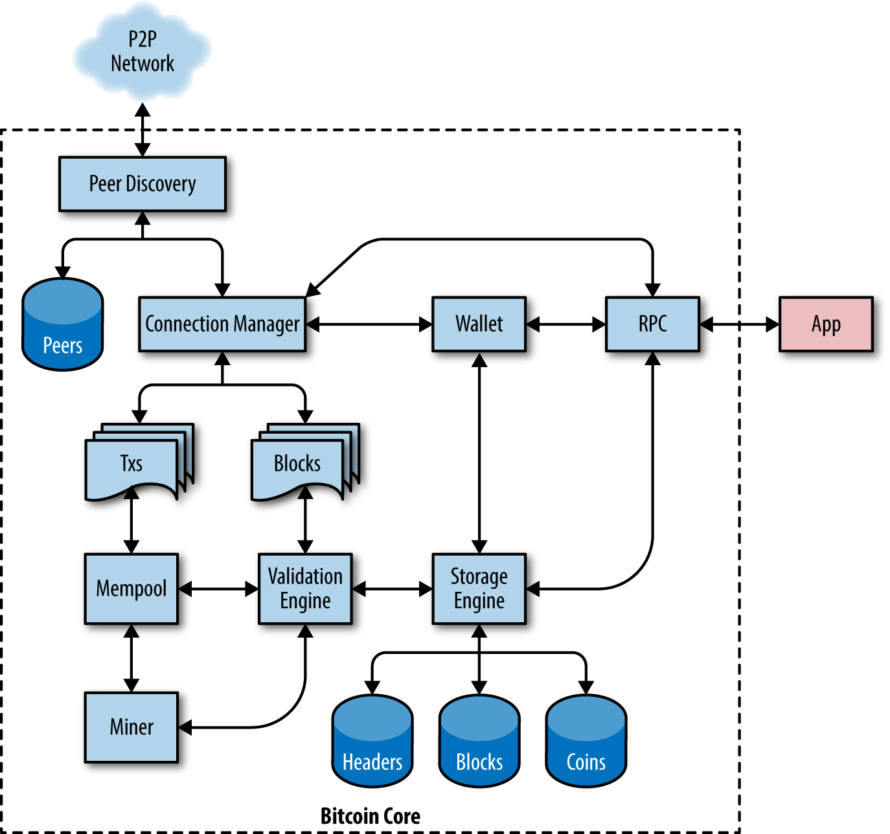

Bitcoin Core：参考实现
只有当人们相信自己日后能够花掉收到的钱，他们才会愿意用有价值的商品和服务去交换货币。如果货币是伪造的，或在不被察觉的情况下被贬值，那么日后可能就无法花用，因此每一个接收比特币的人都有强烈的动机去验证所收到比特币的完整性。比特币系统的设计使得完全运行在你本地计算机上的软件，就能够完美地防止伪造、贬值以及其他几类关键问题。提供这种功能的软件被称为 全验证节点，因为它会针对系统中的每一条规则验证每一笔已确认的比特币交易。全验证节点（简称 全节点）也可以提供工具和数据，帮助理解比特币的工作原理以及网络当前正在发生的事情。
在本章中，我们将安装 Bitcoin Core，这是自比特币网络诞生以来大多数全节点运营者所使用的实现。然后我们会从你的节点中查看区块、交易以及其他数据，这些数据具有权威性——不是因为某个有权势的机构指定它如此，而是因为你的节点独立完成了验证。在本书后续章节中，我们将继续使用 Bitcoin Core 来创建和检视与区块链和网络相关的数据。
从 Bitcoin 到 Bitcoin Core
Bitcoin 是一个 开源 项目，其源代码以开放的 MIT 许可证提供，任何人都可以自由下载和使用。不仅仅是开源，比特币还由一个开放的志愿者社区开发。起初，这个社区只有中本聪一个人。到 2023 年，比特币的源代码已有超过 1,000 名贡献者，其中约有十几位开发者几乎全职投入到代码工作中，另有几十位以兼职形式参与。任何人都可以为代码做出贡献——包括你！
中本聪创建比特币时，软件大部分在白皮书（见 [satoshi_whitepaper]）发表之前就已经完成了。中本聪希望在发表论文之前先确认实现可以工作。那个最初的实现当时简单地被称为"Bitcoin"，后来经历了大量修改和改进，逐步演变成今天的 Bitcoin Core，以与其他实现区分开来。Bitcoin Core 是比特币系统的 参考实现，意思是它为该技术的每一部分应如何实现提供了参考。Bitcoin Core 实现了比特币的所有方面，包括钱包、交易与区块的验证引擎、区块构造工具，以及比特币点对点通信的所有现代组成部分。
Bitcoin Core 架构（来源：Eric Lombrozo）。 展示了 Bitcoin Core 的架构。

虽然 Bitcoin Core 是系统中许多主要部分的参考实现，但比特币白皮书描述的是系统中一些早期部分。自 2011 年以来，系统中的大多数重大变化都被记录在一组 比特币改进提案（BIP）中。在本书中我们会通过编号引用 BIP 规范；例如 BIP9 描述了一种用于对比特币进行多次重要升级的机制。
Bitcoin 开发环境
如果你是一名开发者，你会希望搭建一个开发环境，配齐用于编写比特币应用的所有工具、库和支持软件。在这一高度技术化的章节中，我们将一步步介绍这个过程。如果内容过于密集（而你又不是在真的搭建开发环境），可以放心跳到下一章，那一章的技术性较低。
从源代码编译 Bitcoin Core
Bitcoin Core 的源代码可以下载为压缩包，也可以从 GitHub 克隆源代码仓库。在 Bitcoin Core 下载页面，选择最新版本并下载源代码压缩包。或者，使用 Git 命令行从 GitHub Bitcoin 页面创建源代码的本地副本。
|
在本章的许多示例中，我们将使用操作系统的命令行界面（也称"shell"），通过"终端"应用访问。Shell 会显示一个提示符，你输入命令，shell 会回应一些文本并显示新的提示符以等待你下一个命令。在你的系统上提示符可能看起来不同，但在下面的示例中，它用 $ 符号表示。在示例中，当你看到 $ 符号后面的文本时，不要输入 $ 符号，而是输入紧跟其后的命令，然后按 Enter 执行命令。在示例中，每个命令下方的内容是操作系统对该命令的响应。当你看到下一个 $ 前缀时，就知道这是一条新命令，可以重复上述过程。 |
这里，我们使用 git 命令创建源代码的本地副本（"克隆"）：
$ git clone https://github.com/bitcoin/bitcoin.git Cloning into 'bitcoin'... remote: Enumerating objects: 245912, done. remote: Counting objects: 100% (3/3), done. remote: Compressing objects: 100% (2/2), done. remote: Total 245912 (delta 1), reused 2 (delta 1), pack-reused 245909 Receiving objects: 100% (245912/245912), 217.74 MiB | 13.05 MiB/s, done. Resolving deltas: 100% (175649/175649), done.
|
Git 是使用最广泛的分布式版本控制系统，是任何软件开发者工具箱中必不可少的一部分。如果你的操作系统中还没有 Git，你可能需要先安装 git 命令或它的图形界面客户端。 |
当 Git 克隆操作完成后，你会在 bitcoin 目录中拥有源代码仓库的完整本地副本。使用 cd 命令切换到该目录：
$ cd bitcoin
选择 Bitcoin Core 版本
默认情况下，本地副本会与最新代码同步，而这可能是 Bitcoin 的不稳定或测试版本。在编译代码之前，应通过检出某个发布 tag 来选择一个特定的版本。这会将本地副本同步到由关键字标签标识的代码仓库的特定快照。开发者使用标签按版本号标记特定的代码发布。首先，使用 git tag 命令查看可用的标签：
$ git tag v0.1.5 v0.1.6test1 v0.10.0 ... v0.11.2 v0.11.2rc1 v0.12.0rc1 v0.12.0rc2 ...
标签列表展示了所有已发布的 Bitcoin 版本。按惯例，用于测试的 发布候选版本 会带有"rc"后缀。可在生产系统运行的稳定发布则没有后缀。从前面的列表中，选择最高的版本，撰写本书时为 v24.0.1。要将本地代码同步到该版本，使用 git checkout 命令：
$ git checkout v24.0.1 Note: switching to 'v24.0.1'. You are in 'detached HEAD' state. You can look around, make experimental changes and commit them, and you can discard any commits you make in this state without impacting any branches by switching back to a branch. HEAD is now at b3f866a8d Merge bitcoin/bitcoin#26647: 24.0.1 final changes
你可以通过运行 git status 命令确认是否已"检出"所需版本：
HEAD detached at v24.0.1 nothing to commit, working tree clean
配置 Bitcoin Core 构建
源代码包含若干文档文件。请阅读 bitcoin 目录中 README.md 里的主要文档。在本章中，我们将构建 Bitcoin Core 守护进程（服务器），在 Linux（类 Unix 系统）上称为 bitcoind。阅读 doc/build-unix.md，了解在你的平台上编译 bitcoind 命令行客户端的说明。其他构建说明在 doc 目录下；例如 Windows 平台的说明在 build-windows.md。截至撰写本书时，已有针对 Android、FreeBSD、NetBSD、OpenBSD、macOS (OSX)、Unix 与 Windows 的说明。
仔细阅读构建文档开头列出的构建先决条件。这些是必须在你的系统中存在的库，才能开始编译比特币。如果缺少这些先决条件，构建过程会因错误而失败。如果由于缺少先决条件而失败，可以先安装它，然后从中断处继续构建。假设先决条件已经安装好，可以通过 autogen.sh 脚本生成一组构建脚本来启动构建过程：
$ ./autogen.sh libtoolize: putting auxiliary files in AC_CONFIG_AUX_DIR, 'build-aux'. libtoolize: copying file 'build-aux/ltmain.sh' libtoolize: putting macros in AC_CONFIG_MACRO_DIRS, 'build-aux/m4'. ... configure.ac:58: installing 'build-aux/missing' src/Makefile.am: installing 'build-aux/depcomp' parallel-tests: installing 'build-aux/test-driver'
autogen.sh 脚本会创建一组自动配置脚本，它们会探测你的系统以发现正确的设置，并确保你具备编译代码所需的所有库。其中最重要的是 configure 脚本，它提供了多种选项来自定义构建过程。使用 --help 标志查看各种选项：
$ ./configure --help `configure' configures Bitcoin Core 24.0.1 to adapt to many kinds of systems. Usage: ./configure [OPTION]... [VAR=VALUE]... ... Optional Features: --disable-option-checking ignore unrecognized --enable/--with options --disable-FEATURE do not include FEATURE (same as --enable-FEATURE=no) --enable-FEATURE[=ARG] include FEATURE [ARG=yes] --enable-silent-rules less verbose build output (undo: "make V=1") --disable-silent-rules verbose build output (undo: "make V=0") ...
configure 脚本允许你通过 --enable-FEATURE 和 --disable-FEATURE 标志启用或禁用 bitcoind 的某些功能，其中 FEATURE 替换为帮助输出中列出的功能名称。在本章中，我们将使用所有默认功能来构建 bitcoind 客户端。我们不会使用这些配置标志，但建议你浏览它们以了解客户端中包含哪些可选功能。如果你处在学术环境中，机房限制可能要求你将应用程序安装到用户主目录（例如使用 --prefix=$HOME）。
下面是一些用于覆盖 configure 脚本默认行为的常用选项：
--prefix=$HOME覆盖生成的可执行文件的默认安装位置（默认是 /usr/local/）。使用
$HOME将所有文件放入主目录，或指定其他路径。--disable-wallet用于禁用参考钱包实现。
--with-incompatible-bdb如果你要构建带钱包的版本，允许使用不兼容版本的 Berkeley DB 库。
--with-gui=no不构建图形用户界面（需要 Qt 库）。只构建服务器与命令行版本的 Bitcoin Core。
接下来，运行 configure 脚本自动发现所有必需的库，并为你的系统创建自定义的构建脚本：
$ ./configure checking for pkg-config... /usr/bin/pkg-config checking pkg-config is at least version 0.9.0... yes checking build system type... x86_64-pc-linux-gnu checking host system type... x86_64-pc-linux-gnu checking for a BSD-compatible install... /usr/bin/install -c ... [many pages of configuration tests follow] ...
如果一切顺利，configure 命令最后会生成自定义的构建脚本，让我们可以编译 bitcoind。如果有任何缺失的库或错误，configure 命令会以错误终止，而不是创建构建脚本。如果发生错误，最可能的原因是缺少或不兼容的库。再次查看构建文档，确保安装了缺失的先决条件。然后再次运行 configure，看看错误是否被修复。
构建 Bitcoin Core 可执行文件
接下来，你将编译源代码，这个过程可能需要长达一小时才能完成，取决于你的 CPU 速度和可用内存。如果发生错误，或编译过程被中断，可以随时再次输入 make 来继续。输入 make 开始编译可执行程序：
$ make Making all in src CXX bitcoind-bitcoind.o CXX libbitcoin_node_a-addrdb.o CXX libbitcoin_node_a-addrman.o CXX libbitcoin_node_a-banman.o CXX libbitcoin_node_a-blockencodings.o CXX libbitcoin_node_a-blockfilter.o [... many more compilation messages follow ...]
在拥有多核 CPU 的高速系统上，你可能希望设置并行编译任务数。例如，make -j 2 会使用两个核心（如果可用）。如果一切顺利，Bitcoin Core 现在就编译好了。你应该运行 make check 来执行单元测试套件，以确保链接的库没有明显问题。最后一步是使用 make install 命令将各种可执行文件安装到系统中。这一步需要管理员权限，可能会提示你输入密码：
$ make check && sudo make install Password: Making install in src ../build-aux/install-sh -c -d '/usr/local/lib' libtool: install: /usr/bin/install -c bitcoind /usr/local/bin/bitcoind libtool: install: /usr/bin/install -c bitcoin-cli /usr/local/bin/bitcoin-cli libtool: install: /usr/bin/install -c bitcoin-tx /usr/local/bin/bitcoin-tx ...
bitcoind 的默认安装位置是 /usr/local/bin。你可以通过向系统查询可执行文件的路径来确认 Bitcoin Core 是否正确安装：
$ which bitcoind /usr/local/bin/bitcoind $ which bitcoin-cli /usr/local/bin/bitcoin-cli
运行 Bitcoin Core 节点
Bitcoin 的点对点网络由网络"节点"组成，大多数由个人运行，也有一些由提供比特币服务的企业运行。运行 Bitcoin 节点的人可以直接、权威地看到比特币区块链，他们本地拥有一份所有可花费比特币的副本，由自己的系统独立验证。通过运行一个节点，你不必依赖任何第三方来验证交易。此外，使用 Bitcoin 节点来完全验证你钱包接收到的交易，你也为比特币网络做出了贡献，使其更加稳健。
不过，运行一个节点最初需要下载并处理超过 500 GB 的数据，每天还需处理大约 400 MB 的比特币交易。这些数字是 2023 年的数据，未来可能会逐渐增加。如果你关闭节点或断开互联网连接几天，节点将需要下载错过的数据。例如，如果你关闭 Bitcoin Core 10 天，下次启动时大约需要下载 4 GB。
根据你是否选择索引所有交易并保留完整的区块链副本，可能还需要大量的磁盘空间——如果你打算运行 Bitcoin Core 多年，至少需要 1 TB。默认情况下，比特币节点还会向其他节点（称为"对等节点"）转发交易和区块，消耗上传带宽。如果你的互联网连接受限、有较低的数据上限或按流量计费（按 GB 收费），你可能不应在其上运行比特币节点，或者应以限制带宽的方式运行（参见 配置 Bitcoin Core 节点）。你也可以将节点连接到替代网络，例如免费的卫星数据提供商，如 Blockstream Satellite。
|
默认情况下，Bitcoin Core 会保留完整的区块链副本，其中包含自 2009 年比特币网络诞生以来几乎每一笔已确认的交易。该数据集大小达数百 GB，根据你的 CPU 速度和互联网连接情况，需要数小时甚至数天才能逐步下载完成。在完整区块链数据集下载完成之前，Bitcoin Core 将无法处理交易或更新账户余额。请确保你有足够的磁盘空间、带宽和时间来完成初始同步。你可以配置 Bitcoin Core 通过丢弃旧区块来减少区块链所占用的空间，但仍然需要下载整个数据集。 |
尽管有这些资源要求，仍有成千上万的人运行比特币节点。其中一些运行在像 Raspberry Pi 这样简单的系统上（一台 35 美元、大小如一副扑克牌的电脑）。
为什么要运行节点？以下是一些最常见的原因：
-
你不希望依赖任何第三方来验证你收到的交易。
-
你不希望向第三方泄露哪些交易属于你的钱包。
-
你在开发比特币软件，需要依赖一个比特币节点以通过编程（API）访问网络和区块链。
-
你正在构建必须按照比特币共识规则验证交易的应用程序。通常，比特币软件公司会运行多个节点。
-
你想支持比特币。运行一个节点并用它来验证你钱包接收到的交易，会让网络更稳健。
如果你在阅读本书，并对强安全性、卓越的隐私或开发比特币软件感兴趣，你应该运行自己的节点。
配置 Bitcoin Core 节点
Bitcoin Core 在每次启动时都会在其数据目录中查找配置文件。本节我们将检视各种配置选项并建立一个配置文件。要定位配置文件，在终端运行 bitcoind -printtoconsole，并查看前几行：
$ bitcoind -printtoconsole 2023-01-28T03:21:42Z Bitcoin Core version v24.0.1 2023-01-28T03:21:42Z Using the 'x86_shani(1way,2way)' SHA256 implementation 2023-01-28T03:21:42Z Using RdSeed as an additional entropy source 2023-01-28T03:21:42Z Using RdRand as an additional entropy source 2023-01-28T03:21:42Z Default data directory /home/harding/.bitcoin 2023-01-28T03:21:42Z Using data directory /home/harding/.bitcoin 2023-01-28T03:21:42Z Config file: /home/harding/.bitcoin/bitcoin.conf ... [a lot more debug output] ...
在确定配置文件位置后，可以按 Ctrl-C 关闭节点。通常配置文件位于用户主目录下的 .bitcoin 数据目录中。在你喜欢的编辑器中打开配置文件。
Bitcoin Core 提供超过 100 个配置选项，用于修改网络节点的行为、区块链的存储以及其他许多运行方面。要查看这些选项的列表，运行 bitcoind --help：
$ bitcoind --help
Bitcoin Core version v24.0.1
Usage: bitcoind [options] Start Bitcoin Core
Options:
-?
Print this help message and exit
-alertnotify=<cmd>
Execute command when an alert is raised (%s in cmd is replaced by
message)
...
[many more options]
下面是一些最重要的选项，可以在配置文件中设置，也可以作为命令行参数传给 bitcoind：
- alertnotify
-
运行指定的命令或脚本向节点所有者发送紧急警报。
- conf
-
配置文件的备用位置。只能作为 bitcoind 的命令行参数使用，因为它不能写在它所引用的配置文件里。
- datadir
-
选择存放所有区块链数据的目录和文件系统。默认是主目录下的 .bitcoin 子目录。截至撰写本书时，根据配置不同，这可能占用从约 10 GB 到接近 1 TB 的空间，预计每年最大体积将增长数百 GB。
- prune
-
通过删除旧区块将区块链磁盘空间占用降至指定的兆字节数。在无法容纳完整区块链的资源受限节点上使用。系统的其他部分会使用目前无法修剪的其他磁盘空间，因此你仍然至少需要 datadir 选项中提到的最小空间。
- txindex
-
维护一份所有交易的索引。这允许你通过 ID 以编程方式检索任何交易，只要包含该交易的区块没有被修剪。
- dbcache
-
UTXO 缓存的大小。默认是 450 兆字节（MiB）。在高端硬件上增加该值以减少磁盘读写次数，或在低端硬件上减小该值以节省内存（代价是更频繁地使用磁盘）。
- blocksonly
-
通过仅从对等节点接受已确认交易的区块、而不转发未确认交易，来最小化带宽使用。
- maxmempool
-
将交易内存池限制为指定的兆字节数。在内存受限的节点上用于减少内存使用。
全索引节点的示例配置 展示了如何将前述选项组合到一个完全索引的节点中，作为某个比特币应用的 API 后端运行。
alertnotify=myemailscript.sh "Alert: %s" datadir=/lotsofspace/bitcoin txindex=1
资源受限系统的示例配置 展示了运行在较小服务器上的资源受限节点。
alertnotify=myemailscript.sh "Alert: %s" blocksonly=1 prune=5000 dbcache=150 maxmempool=150
在你编辑了配置文件并设置了最能代表你需求的选项后，可以用这个配置测试 bitcoind。使用 printtoconsole 选项运行 Bitcoin Core，将其前台运行并将输出打印到控制台：
$ bitcoind -printtoconsole 2023-01-28T03:43:39Z Bitcoin Core version v24.0.1 2023-01-28T03:43:39Z Using the 'x86_shani(1way,2way)' SHA256 implementation 2023-01-28T03:43:39Z Using RdSeed as an additional entropy source 2023-01-28T03:43:39Z Using RdRand as an additional entropy source 2023-01-28T03:43:39Z Default data directory /home/harding/.bitcoin 2023-01-28T03:43:39Z Using data directory /lotsofspace/bitcoin 2023-01-28T03:43:39Z Config file: /home/harding/.bitcoin/bitcoin.conf 2023-01-28T03:43:39Z Config file arg: [main] blockfilterindex="1" 2023-01-28T03:43:39Z Config file arg: [main] maxuploadtarget="1000" 2023-01-28T03:43:39Z Config file arg: [main] txindex="1" 2023-01-28T03:43:39Z Setting file arg: wallet = ["msig0"] 2023-01-28T03:43:39Z Command-line arg: printtoconsole="" 2023-01-28T03:43:39Z Using at most 125 automatic connections 2023-01-28T03:43:39Z Using 16 MiB out of 16 MiB requested for signature cache 2023-01-28T03:43:39Z Using 16 MiB out of 16 MiB requested for script execution 2023-01-28T03:43:39Z Script verification uses 3 additional threads 2023-01-28T03:43:39Z scheduler thread start 2023-01-28T03:43:39Z [http] creating work queue of depth 16 2023-01-28T03:43:39Z Using random cookie authentication. 2023-01-28T03:43:39Z Generated RPC cookie /lotsofspace/bitcoin/.cookie 2023-01-28T03:43:39Z [http] starting 4 worker threads 2023-01-28T03:43:39Z Using wallet directory /lotsofspace/bitcoin/wallets 2023-01-28T03:43:39Z init message: Verifying wallet(s)… 2023-01-28T03:43:39Z Using BerkeleyDB version Berkeley DB 4.8.30 2023-01-28T03:43:39Z Using /16 prefix for IP bucketing 2023-01-28T03:43:39Z init message: Loading P2P addresses… 2023-01-28T03:43:39Z Loaded 63866 addresses from peers.dat 114ms [... more startup messages ...]
当你确认它加载了正确的设置并按预期运行后，可以按 Ctrl-C 中断进程。
要让 Bitcoin Core 作为后台进程运行，可使用 daemon 选项启动，即 bitcoind -daemon。
要监视比特币节点的进度和运行状态，以守护模式启动它，然后使用 bitcoin-cli getblockchaininfo 命令：
$ bitcoin-cli getblockchaininfo
{
"chain": "main",
"blocks": 0,
"headers": 83999,
"bestblockhash": "[...]19d6689c085ae165831e934ff763ae46a2a6c172b3f1b60a8ce26f",
"difficulty": 1,
"time": 1673379796,
"mediantime": 1231006505,
"verificationprogress": 3.783041623201835e-09,
"initialblockdownload": true,
"chainwork": "[...]000000000000000000000000000000000000000000000100010001",
"size_on_disk": 89087,
"pruned": false,
"warnings": ""
}这表明该节点当前区块链高度为 0 个区块、83,999 个头部。节点首先从对等节点获取区块头，以便找到累计工作量最大的区块链，然后继续下载完整区块并逐一验证。
一旦你对所选择的配置选项感到满意，应当将 Bitcoin Core 添加到操作系统的启动脚本中，以便它能够持续运行，并在操作系统重启时自动重启。在 Bitcoin Core 源代码目录的 contrib/init 下有针对各种操作系统的示例启动脚本，并附有 README.md 文件说明哪个系统应使用哪个脚本。
Bitcoin Core API
Bitcoin Core 实现了一个 JSON-RPC 接口，也可以通过命令行助手 bitcoin-cli 访问。命令行允许我们交互式地体验那些同样通过 API 以编程方式可用的能力。首先，调用 help 命令查看可用的 Bitcoin Core RPC 命令列表：
$ bitcoin-cli help +== Blockchain == getbestblockhash getblock "blockhash" ( verbosity ) getblockchaininfo ... walletpassphrase "passphrase" timeout walletpassphrasechange "oldpassphrase" "newpassphrase" walletprocesspsbt "psbt" ( sign "sighashtype" bip32derivs finalize )
每个命令可能接收若干参数。要获得更多帮助、详细描述以及参数信息，可以在 help 后面加上命令名称。例如，查看 getblockhash RPC 命令的帮助：
$ bitcoin-cli help getblockhash
getblockhash height
Returns hash of block in best-block-chain at height provided.
Arguments:
1. height (numeric, required) The height index
Result:
"hex" (string) The block hash
Examples:
> bitcoin-cli getblockhash 1000
> curl --user myusername --data-binary '{"jsonrpc": "1.0", "id": "curltest",
"method": "getblockhash",
"params": [1000]}' -H 'content-type: text/plain;' http://127.0.0.1:8332/
帮助信息末尾会显示该 RPC 命令的两个示例，分别使用 bitcoin-cli 助手或 HTTP 客户端 curl。这些示例演示了如何调用该命令。复制第一个示例并查看结果：
$ bitcoin-cli getblockhash 1000 00000000c937983704a73af28acdec37b049d214adbda81d7e2a3dd146f6ed09
结果是一个区块哈希，后续章节会更详细地说明。但就目前而言，该命令应在你的系统上返回相同的结果，说明你的 Bitcoin Core 节点正在运行、接受命令，并且能够返回区块 1,000 的信息给你。
在接下来的几节中，我们会演示一些非常有用的 RPC 命令及其预期输出。
获取 Bitcoin Core 状态信息
Bitcoin Core 通过 JSON-RPC 接口为不同的模块提供状态报告。最重要的命令包括 getblockchaininfo、getmempoo⁠l​info、getnetworkinfo 以及 getwalletinfo。
Bitcoin 的 getblockchaininfo RPC 命令前面已经介绍过。getnetwor⁠k​info 命令显示比特币网络节点状态的基本信息。使用 bitcoin-cli 运行：
$ bitcoin-cli getnetworkinfo
{
"version": 240001,
"subversion": "/Satoshi:24.0.1/",
"protocolversion": 70016,
"localservices": "0000000000000409",
"localservicesnames": [
"NETWORK",
"WITNESS",
"NETWORK_LIMITED"
],
"localrelay": true,
"timeoffset": -1,
"networkactive": true,
"connections": 10,
"connections_in": 0,
"connections_out": 10,
"networks": [
"...detailed information about all networks..."
],
"relayfee": 0.00001000,
"incrementalfee": 0.00001000,
"localaddresses": [
],
"warnings": ""
}数据以 JavaScript 对象表示法（JSON）返回，这种格式可以方便地被所有编程语言"消费"，同时也具有相当好的人类可读性。在这些数据中可以看到 Bitcoin Core 软件和 Bitcoin 协议的版本号。我们还看到当前的连接数以及关于比特币网络和该节点设置的各种信息。
|
bitcoind 需要一些时间，可能超过一天，才能追上当前的区块链高度，因为它要从其他比特币节点下载区块并验证其中的每一笔交易——截至撰写本书时已接近十亿笔交易。你可以通过 getblockchaininfo 查看已知区块的数量来跟踪进度。本章其余的示例假设你至少已经同步到区块 775,072。由于比特币交易的安全性依赖于区块，下面示例中的某些信息可能会根据你节点所拥有的区块数量略有不同。 |
查看和解码交易
在 [spending_bitcoin] 中，Alice 在 Bob 的店里完成了一笔购物。她的交易被记录在了区块链上。让我们使用 API 通过传入交易 ID（txid）作为参数来检索并检视这笔交易：
$ bitcoin-cli getrawtransaction 466200308696215bbc949d5141a49a41\ 38ecdfdfaa2a8029c1f9bcecd1f96177 01000000000101eb3ae38f27191aa5f3850dc9cad00492b88b72404f9da13569 8679268041c54a0100000000ffffffff02204e0000000000002251203b41daba 4c9ace578369740f15e5ec880c28279ee7f51b07dca69c7061e07068f8240100 000000001600147752c165ea7be772b2c0acb7f4d6047ae6f4768e0141cf5efe 2d8ef13ed0af21d4f4cb82422d6252d70324f6f4576b727b7d918e521c00b51b e739df2f899c49dc267c0ad280aca6dab0d2fa2b42a45182fc83e81713010000 0000
|
交易 ID（txid）并不具备权威性。区块链上没有某个 txid，并不意味着该交易没有被处理。这被称为"交易延展性"（transaction malleability），因为在交易被一个区块确认之前，它可以被修改，从而改变其 txid。一旦交易被包含进某个区块后，除非发生区块链重组（reorganization）将该区块从最佳区块链中移除，否则其 txid 不会改变。在交易获得若干确认之后，重组发生的概率极低。 |
getrawtransaction 命令以十六进制返回序列化的交易。要解码它，可以使用 decoderawtransaction 命令，并将十六进制数据作为参数传入。你可以复制 getrawtransaction 返回的十六进制并粘贴给 decoderawtransaction 作为参数：
$ bitcoin-cli decoderawtransaction 01000000000101eb3ae38f27191aa5f3850dc9cad0\ 0492b88b72404f9da135698679268041c54a0100000000ffffffff02204e00000000000022512\ 03b41daba4c9ace578369740f15e5ec880c28279ee7f51b07dca69c7061e07068f82401000000\ 00001600147752c165ea7be772b2c0acb7f4d6047ae6f4768e0141cf5efe2d8ef13ed0af21d4f\ 4cb82422d6252d70324f6f4576b727b7d918e521c00b51be739df2f899c49dc267c0ad280aca6\ dab0d2fa2b42a45182fc83e817130100000000
{
"txid": "466200308696215bbc949d5141a49a4138ecdfdfaa2a8029c1f9bcecd1f96177",
"hash": "f7cdbc7cf8b910d35cc69962e791138624e4eae7901010a6da4c02e7d238cdac",
"version": 1,
"size": 194,
"vsize": 143,
"weight": 569,
"locktime": 0,
"vin": [
{
"txid": "4ac541802679866935a19d4f40728bb89204d0cac90d85f3a51a19...aeb",
"vout": 1,
"scriptSig": {
"asm": "",
"hex": ""
},
"txinwitness": [
"cf5efe2d8ef13ed0af21d4f4cb82422d6252d70324f6f4576b727b7d918e5...301"
],
"sequence": 4294967295
}
],
"vout": [
{
"value": 0.00020000,
"n": 0,
"scriptPubKey": {
"asm": "1 3b41daba4c9ace578369740f15e5ec880c28279ee7f51b07dca...068",
"desc": "rawtr(3b41daba4c9ace578369740f15e5ec880c28279ee7f51b...6ev",
"hex": "51203b41daba4c9ace578369740f15e5ec880c28279ee7f51b07d...068",
"address": "bc1p8dqa4wjvnt890qmfws83te0v3qxzsfu7ul63kp7u56w8q...5qn",
"type": "witness_v1_taproot"
}
},
{
"value": 0.00075000,
"n": 1,
"scriptPubKey": {
"asm": "0 7752c165ea7be772b2c0acb7f4d6047ae6f4768e",
"desc": "addr(bc1qwafvze0200nh9vkq4jmlf4sy0tn0ga5w0zpkpg)#qq404gts",
"hex": "00147752c165ea7be772b2c0acb7f4d6047ae6f4768e",
"address": "bc1qwafvze0200nh9vkq4jmlf4sy0tn0ga5w0zpkpg",
"type": "witness_v0_keyhash"
}
}
]
}
交易解码显示了这笔交易的所有组成部分，包括交易输入和输出。本例中我们看到这笔交易使用了一个输入并生成了两个输出。该交易的输入是先前一笔已确认交易的输出（显示为输入中的 txid）。两个输出对应着支付给 Bob 的款项以及找零回 Alice 的部分。
我们可以使用相同的命令（例如 getrawtransaction）继续查看该交易中通过 txid 引用的前一笔交易，从而进一步探索区块链。从一笔交易跳到下一笔，我们可以跟踪一条交易链，看着这些比特币从一个所有者传递给下一个所有者。
查看区块
查看区块与查看交易类似。然而，区块既可以通过 高度 也可以通过 哈希 来引用。首先，让我们按高度查找一个区块。我们使用 getblockhash 命令，它以区块高度作为参数，并返回该区块的 区块头哈希：
$ bitcoin-cli getblockhash 123456 0000000000002917ed80650c6174aac8dfc46f5fe36480aaef682ff6cd83c3ca
既然我们已经知道所选区块的区块头哈希，就可以查询该区块。使用 getblock 命令，将区块哈希作为参数：
$ bitcoin-cli getblock 0000000000002917ed80650c6174aac8dfc46f5fe36480aaef682f\ f6cd83c3ca
{
"hash": "0000000000002917ed80650c6174aac8dfc46f5fe36480aaef682ff6cd83c3ca",
"confirmations": 651742,
"height": 123456,
"version": 1,
"versionHex": "00000001",
"merkleroot": "0e60651a9934e8f0decd1c[...]48fca0cd1c84a21ddfde95033762d86c",
"time": 1305200806,
"mediantime": 1305197900,
"nonce": 2436437219,
"bits": "1a6a93b3",
"difficulty": 157416.4018436489,
"chainwork": "[...]00000000000000000000000000000000000000541788211ac227bc",
"nTx": 13,
"previousblockhash": "[...]60bc96a44724fd72daf9b92cf8ad00510b5224c6253ac40095",
"nextblockhash": "[...]00129f5f02be247070bf7334d3753e4ddee502780c2acaecec6d66",
"strippedsize": 4179,
"size": 4179,
"weight": 16716,
"tx": [
"5b75086dafeede555fc8f9a810d8b10df57c46f9f176ccc3dd8d2fa20edd685b",
"e3d0425ab346dd5b76f44c222a4bb5d16640a4247050ef82462ab17e229c83b4",
"137d247eca8b99dee58e1e9232014183a5c5a9e338001a0109df32794cdcc92e",
"5fd167f7b8c417e59106ef5acfe181b09d71b8353a61a55a2f01aa266af5412d",
"60925f1948b71f429d514ead7ae7391e0edf965bf5a60331398dae24c6964774",
"d4d5fc1529487527e9873256934dfb1e4cdcb39f4c0509577ca19bfad6c5d28f",
"7b29d65e5018c56a33652085dbb13f2df39a1a9942bfe1f7e78e97919a6bdea2",
"0b89e120efd0a4674c127a76ff5f7590ca304e6a064fbc51adffbd7ce3a3deef",
"603f2044da9656084174cfb5812feaf510f862d3addcf70cacce3dc55dab446e",
"9a4ed892b43a4df916a7a1213b78e83cd83f5695f635d535c94b2b65ffb144d3",
"dda726e3dad9504dce5098dfab5064ecd4a7650bfe854bb2606da3152b60e427",
"e46ea8b4d68719b65ead930f07f1f3804cb3701014f8e6d76c4bdbc390893b94",
"864a102aeedf53dd9b2baab4eeb898c5083fde6141113e0606b664c41fe15e1f"
]
}
confirmations 字段告诉我们该区块的 深度——也就是有多少区块构建在它之上，反映了改动该区块内任何交易的难度。height 告诉我们在该区块之前已经有多少个区块。我们看到区块的版本、它的创建时间（按其矿工的说法）、紧接其前 11 个区块的中位时间（这是矿工较难操纵的时间度量），以及以三种不同方式衡量的区块大小（其传统的去掉见证后的 stripped size、其完整大小，以及以权重单位计量的大小）。我们还看到一些用于安全和工作量证明的字段（Merkle 根、nonce、bits、difficulty 以及 chainwork）；我们将在 [mining] 中详细考察它们。
使用 Bitcoin Core 的编程接口
bitcoin-cli 助手非常适合用于探索 Bitcoin Core API 和测试功能。但 API 的真正意义在于以编程方式访问功能。本节我们将演示如何从另一个程序中访问 Bitcoin Core。
Bitcoin Core 的 API 是一个 JSON-RPC 接口。JSON 是一种非常方便、对人类和程序都易于阅读的数据呈现方式。RPC 表示远程[.keep-together]#过程#调用（remote procedure call），意思是我们通过网络协议调用远程（在 Bitcoin Core 节点上的）过程（函数）。在本例中，网络协议是 HTTP。
当我们使用 bitcoin-cli 命令查看某个命令的帮助时，它向我们展示了使用 curl（一个用途广泛的命令行 HTTP 客户端）构造此类 JSON-RPC 调用的示例：
$ curl --user myusername --data-binary '{"jsonrpc": "1.0", "id":"curltest",
"method": "getblockchaininfo",
"params": [] }' -H 'content-type: text/plain;' http://127.0.0.1:8332/
该命令显示 curl 向本地主机（127.0.0.1）的默认 Bitcoin RPC 端口（8332）提交了 HTTP 请求，并使用 text/plain 编码提交了一个针对 getblockchaininfo 方法的 jsonrpc 请求。
你可能注意到 curl 在请求中需要附带凭证。Bitcoin Core 在每次启动时会创建一个随机密码，并将其放入数据目录下名为 .cookie 的文件中。bitcoin-cli 助手在给定数据目录时可以读取该密码文件。同样，你也可以复制密码并传给 curl（或任何更高层的 Bitcoin Core RPC 封装库），如 使用基于 cookie 的认证访问 Bitcoin Core 所示。
或者，你可以使用 Bitcoin Core 源代码目录中 ./share/rpcauth/rpcauth.py 提供的辅助脚本来创建一个静态密码。
如果你要在自己的程序中实现 JSON-RPC 调用，可以使用通用的 HTTP 库来构造调用，类似于上面展示的 curl 示例。
不过，大多数主流编程语言都有库，它们以让事情更简单的方式"封装"了 Bitcoin Core API。我们将使用 python-bitcoinlib 库来简化 API 访问。该库不是 Bitcoin Core 项目的一部分，需要按照通常的方式安装 Python 库。请记住，这要求你有一个正在运行的 Bitcoin Core 实例，用于响应 JSON-RPC 调用。
通过 Bitcoin Core 的 JSON-RPC API 运行 getblockchaininfo 中的 Python 脚本进行了一次简单的 getblockchaininfo 调用，并从 Bitcoin Core 返回的数据中打印 block 参数。
from bitcoin.rpc import RawProxy
# Create a connection to local Bitcoin Core node
p = RawProxy()
# Run the getblockchaininfo command, store the resulting data in info
info = p.getblockchaininfo()
# Retrieve the 'blocks' element from the info
print(info['blocks'])运行后我们得到如下结果：
$ python rpc_example.py 773973
它告诉我们本地 Bitcoin Core 节点的区块链中有多少个区块。这不是什么了不起的结果，但它演示了如何把该库作为简化接口来使用 Bitcoin Core 的 JSON-RPC API 的基本用法。
接下来，我们使用 getrawtransaction 和 decodetransaction 调用来获取 Alice 支付给 Bob 的那笔交易的详细信息。在 获取一笔交易并迭代其输出 中，我们检索 Alice 的交易并列出该交易的输出。对每个输出，我们展示接收地址和金额。提醒一下，Alice 的交易有一个输出支付给 Bob，另一个输出是找零回到 Alice。
from bitcoin.rpc import RawProxy
p = RawProxy()
# Alice's transaction ID
txid = "466200308696215bbc949d5141a49a4138ecdfdfaa2a8029c1f9bcecd1f96177"
# First, retrieve the raw transaction in hex
raw_tx = p.getrawtransaction(txid)
# Decode the transaction hex into a JSON object
decoded_tx = p.decoderawtransaction(raw_tx)
# Retrieve each of the outputs from the transaction
for output in decoded_tx['vout']:
print(output['scriptPubKey']['address'], output['value'])运行这段代码，我们得到：
$ python rpc_transaction.py bc1p8dqa4wjvnt890qmfws83te0v3qxzsfu7ul63kp7u56w8qc0qwp5qv995qn 0.00020000 bc1qwafvze0200nh9vkq4jmlf4sy0tn0ga5w0zpkpg 0.00075000
上面的两个例子都相当简单。其实不需要专门写程序来运行它们；用 bitcoin-cli 助手同样可以轻松完成。但下一个例子需要几百次 RPC 调用，更清楚地展示了使用编程接口的好处。
在 获取一个区块并对所有交易输出求和 中，我们首先获取一个区块，然后按交易 ID 检索其中的每一笔交易。接着，我们遍历每笔交易的输出，并累加金额。
from bitcoin.rpc import RawProxy
p = RawProxy()
# The block height where Alice's transaction was recorded
blockheight = 775072
# Get the block hash of the block at the given height
blockhash = p.getblockhash(blockheight)
# Retrieve the block by its hash
block = p.getblock(blockhash)
# Element tx contains the list of all transaction IDs in the block
transactions = block['tx']
block_value = 0
# Iterate through each transaction ID in the block
for txid in transactions:
tx_value = 0
# Retrieve the raw transaction by ID
raw_tx = p.getrawtransaction(txid)
# Decode the transaction
decoded_tx = p.decoderawtransaction(raw_tx)
# Iterate through each output in the transaction
for output in decoded_tx['vout']:
# Add up the value of each output
tx_value = tx_value + output['value']
# Add the value of this transaction to the total
block_value = block_value + tx_value
print("Total value in block: ", block_value)运行这段代码，我们得到：
$ python rpc_block.py Total value in block: 10322.07722534
我们的示例代码计算出该区块中交易的总价值为 10,322.07722534 BTC（包括 25 BTC 的区块奖励以及 0.0909 BTC 的手续费）。可以与某个区块浏览器站点报告的金额做对比，方法是按区块哈希或高度搜索。一些区块浏览器报告的总价值不包括奖励，也不包括手续费。看看你能否找出其中的差异。
替代客户端、库与工具包
在比特币生态中存在许多替代的客户端、库、工具包，甚至完整的全节点实现。它们以多种编程语言实现，为程序员提供其偏好语言的原生接口。
下面几节按编程语言分类，列出一些最优秀的库、客户端和工具包。
C/C++
- Bitcoin Core
-
比特币的参考实现
JavaScript
Java
- bitcoinj
-
一个 Java 全节点客户端库
Python
- python-bitcoinlib
-
由 Peter Todd 编写的 Python 比特币库、共识库和节点
- pycoin
-
由 Richard Kiss 编写的 Python 比特币库
Go
- btcd
-
一个 Go 语言实现的全节点比特币客户端
Rust
- rust-bitcoin
-
用于序列化、解析和 API 调用的 Rust 比特币库
Scala
- bitcoin-s
-
用 Scala 实现的比特币
C#
- NBitcoin
-
面向 .NET 框架的全面比特币库
还有许多其他编程语言的库存在，并且新的库还在不断涌现。
如果你按照本章中的说明操作，现在你已经让 Bitcoin Core 运行起来，并开始使用自己的全节点探索网络与区块链。从今往后，你都可以独立地使用自己控制的、运行在自己控制的计算机上的软件，去验证你所收到的任何比特币是否遵守了比特币系统中的每一条规则，而无需信任任何外部权威。在接下来的几章中，我们将进一步了解系统的规则，以及你的节点和钱包是如何使用这些规则来保护你的资金、保护你的隐私、并让花费与接收变得[.keep-together]#便利#的。